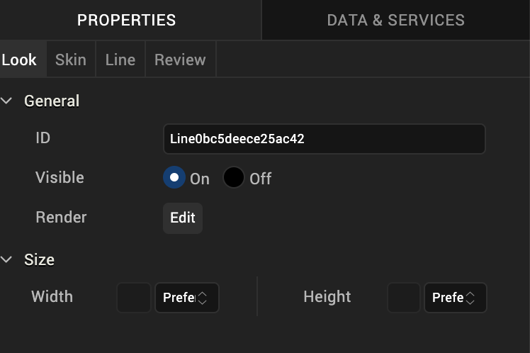
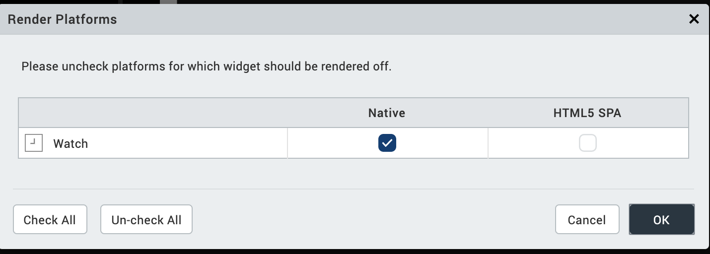
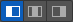
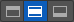
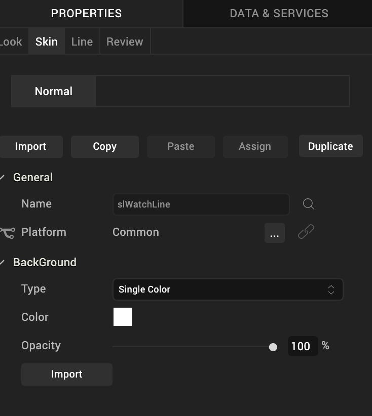
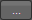
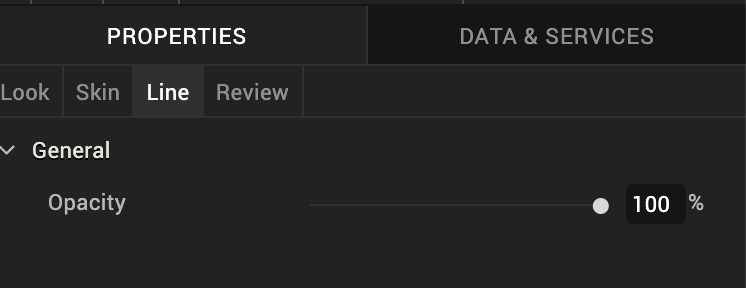

Line Widget for Watch
The Line widget is a non-interactive widget that provides a means of visually separating widgets from one another on the Watch screen.
Click any of the following to learn about the properties found on the tabs of the Line widget.
Look
On the Look tab, you define properties and behaviors related to a Line widget's appearance and position. The following sections describe each of its properties.

ID
Denotes the name of a widget. When a widget is added to a form, a unique name is assigned to the widget. You can rename a widget by entering a new name in the ID text box.
Note: You can also rename a widget from the Project Explorer by right-clicking a widget, and then clicking Rename.
Visible
Controls whether or not the user of the app can see the widget.
- To make a widget visible, click On.
- To make a widget invisible, click Off.
Render
Defines whether a widget appears on a specific platform. Currently, the Watch channel supports only the Apple Watch Native and HTML5 SPA platforms. Clicking the Render property's Edit button opens the Render Platforms dialog box.

Clear the check box of the platforms for which the widget should not be rendered.
The Difference between Visible and Render
- When a Widget is not rendered for a platform, it implies that the widget is hidden from that specific platform.
- Whereas, when a widget is set as invisible, it implies that the widget is available, but is invisible. This feature is useful when you wanted to display a widget based on certain conditions.
Widget Align
The Widget Align property specifies how a widget's boundaries are aligned with respect to its parent. The following alignment options are available:
 | Aligns the left edge of the widget with the left edge of its parent. |
 | Aligns the horizontal center of the widget with the horizontal center of its parent. |
 | Aligns the right edge of the widget with the right edge of its parent. |
| Aligns the top edge of the widget with the top edge of its parent. | |
 | Aligns the vertical center of the widget with the vertical center of its parent. |
| Aligns the bottom edge of the widget with the bottom edge of its parent. |
Width
Width determines the width of the widget as measured along the x-axis.
Following are the options that can be used as units of width:
- %. Specifies the values in percentage relative to the parent dimensions.
- Dp. Specifies the values in terms of device independent pixels.
- Preferred. When this option is specified, the layout uses preferred height of the widget as height and preferred size of the widget is determined by the widget and may varies between platforms.
Height
Height determines the height of the widget as measured along the y-axis (height of the parent). You can use any of the following options:
- %. Specifies the values in percentage relative to the parent dimensions.
- Dp. Specifies the values in terms of device independent pixels.
- Preferred. When this option is specified, the layout uses preferred height of the widget as height and preferred size of the widget is determined by the widget and may varies between platforms.
Skin
A widget’s appearance is defined by the skin that is applied to it. Every widget has a skin, even if it’s just the Volt MX Iris default skin. Skins give you the ability to establish visual continuity in your app. On the Skin tab, you can select to use a specific skin for your widget. In addition, you can configure the widget's background and font.
In the Mobile, Tablet, and Desktop channels, a widget may have a number of states, such as Normal (when it's not being interacted with), Focus (e.g. when it's been tabbed to), or Pressed. However, the Watch channel has only one state: Normal.

General
Under the General section of the Skin tab, you can change the name of the skin currently applied (if it's not one of the default skins), or you can select from the other available line skins by clicking the magnifying glass icon next to the Name text box.
Platform
In channels that support multiple platforms, it's possible to fork a skin by clicking the Platform ellipsis button

, and then selecting the platforms that you want to fork the widget to. In the case of the Watch channel, currently the only platform available is Watch (Native). For more information, see Forking.Background
Under the Background section of the Skin tab, you can set the type of background you want to use, and set the color and its opacity.
Type
For the Watch channel, the Line widget is capable of a Single Color background.
Color
With Single Color as the background type, you can configure the hue you want by clicking the square color icon and dragging the cursor to the color of your choosing.
Opacity
Similarly, with Single Color as the background type, you can configure the opacity of the background color. By default, the opacity is set to 100, making the background completely opaque with no transparency. However, if you want the background to have a degree of transparency, you can decrease its opacity. To do so, type a value between 0 and 100 in the Opacity text box, or drag the opacity slider to the degree of opacity that you want.
For more information about applying skins, see Understanding Skins and Themes.
Line Tab
On this tab, you configure properties unique to the Line widget. Currently, there is only one.

Opacity. Sets the degree to which the widget is transparent or opaque. By default, the opacity is set to 100, making the widget completely opaque with no transparency. However, if you want it to have a degree of transparency, you can decrease its opacity. To do so, type a value between 0 and 100 in the Opacity text box, or drag the opacity slider to the degree of opacity that you want.
Review Tab
On this tab, you can add and review notes. With the Review Notes feature, you can capture feedback from users who are evaluating your app design. Such requirements capturing helps ensure that the design of your app successfully meets the requirements of potential users. The Review Notes feature supports rich text formatting such as font type and size, paragraph alignment, numbered and bulleted lists, block quotes, and even tables.
For more information, see Capture Product Requirements with Review Notes.